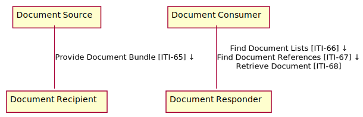

4.0.0-comment - ballot
4.0.0-comment - ballot
This page is part of the IHE Mobile Access to Health Documents (v4.0.0-comment: Publication Ballot 2) based on FHIR R4. The current version which supercedes this version is 4.2.0. For a full list of available versions, see the Directory of published versions 
This section defines the actors and transactions in this implementation guide.
Figure below shows the actors directly involved in the MHD Profile and the relevant transactions between them.

Figure 33.1-1: MHD Actor Diagram
Table 33.1-1 lists the transactions for each actor directly involved in the MHD Implementation Guide. To claim compliance with this guide, an actor shall support all required transactions (labeled “R”) and may support the optional transactions (labeled “O”).
| Actors | Transactions | Optionality |
|---|---|---|
| Document Source | Provide Document Bundle [ITI-65] | R |
| Document Recipient | Provide Document Bundle [ITI-65] | R |
| Document Consumer | Find Document Lists [ITI-66] | R |
| Find Document References [ITI-67] | R | |
| Retrieve Document [ITI-68] | R | |
| Document Responder | Find Document Lists [ITI-66] | R |
| Find Document References [ITI-67] | R | |
| Retrieve Document [ITI-68] | R |
The actors in this profile are described in more detail in the sections below.
The Document Source is the producer and publisher of SubmissionSet, Folder, DocumentReference, and documents to a Document Recipient.
The Document Consumer queries Document Responder for SubmissionSet, Folder, and DocumentReference metadata meeting certain criteria and may retrieve selected documents.
The Document Recipient receives documents and metadata sent by the Document Source.
The Document Responder responds with SubmissionSet, Folder, and DocumentReference metadata in response to a search request, and responds with documents in response to a retrieve request, from a Document Consumer.
Options that may be selected for each actor in this implementation guide, are listed in Table 33.2-1 below. Dependencies between options when applicable are specified in notes.
| Actor | Option Name |
| Document Source | Comprehensive Metadata |
| UnContained Reference | |
| Document Recipient | Comprehensive Metadata |
| XDS on FHIR | |
| UnContained Reference | |
| Document Consumer | UnContained Reference |
| Document Responder | XDS on FHIR |
| UnContained Reference |
The options in this guide are described in more detail in the sections below.
Support of this option assures that the Document Source will provide comprehensive metadata. Comprehensive metadata fulfill the cardinality requirements of XDS.
A Document Source that supports this option will provide metadata consistent with the additional document sharing requirements for an XDS Document Source described in ITI TF-3: 4.3.1- Submission Metadata Attribute Optionality and ITI TF-3: 4.5.1 Metadata Object Types mapped to FHIR.
A Document Recipient that supports this option will require that any metadata provided is consistent with the additional document sharing requirements for an XDS Document Source described in ITI TF-3: 4.3.1- Submission Metadata Attribute Optionality.
The Document Recipient that supports this option shall be able to be grouped with an XDS Document Source so that any publication request is passed on to that XDS environment. See the transaction specific requirements outlined in ITI-65 XDS on FHIR Option. The grouped XDS Document Source shall implement the Document Replacement Option, Document Addendum Option, Document Transformation Option, and Folder Management Option to ensure that these functionalities can be transferred from the MHD Document Source through to the XDS Document Registry.
The Document Responder that supports this option shall be able to be grouped with an XDS Document Consumer so that any query or retrieve requests can be passed on to, and responded to, by an XDS environment. The transaction specific requirements are outlined in ITI-66 XDS on FHIR Options and ITI-67 XDS on FHIR Option.
The XDS on FHIR Option is not compatible with the UnContained Reference Option. A system may be able to support both options, but only one will be able to be used at a given deployment.
The UnContained Reference Option recognizes that a Community may choose to longitudinally maintain their provider and patient directories, for example, an mCSD Care Services Selective Supplier and PMIR Patient Identity Manager. When this longitudinal consistency is managed, then the author, authenticator, sourcePatientInfo, and author entries do not need to be a contained copy of the information known at the time of publication ITI-65 since a Reference to the information in these directories will be valid over the full lifecycle of the entries.
The actors that support the UnContained Reference Option shall be able to create and consume full URL values in the DocumentReference.author, the DocumentReference.authenticator, the DocumentReference.context.sourcePatientInfo, and the DocumentManifest.author. This requirement encourages the persisting of the information at the time the document is published.
The UnContained Reference Option is not compatible with the XDS on FHIR Option. A system may be able to support both options, but only one will be able to be used at a given deployment.
The transactions in this profile are summarized in the sections below.
This transaction is used to transfer documents and metadata and is analogous to a Provide and Register Document Set-b ITI-41 transaction.
For more details see the detailed ITI-65 transaction description
This transaction is used to issue parameterize queries that result in a List resource representing a SubmissionSet or a Folder.
For more details see the detailed ITI-66 transaction description
This transaction is used to issue parameterized queries that result in a list of Document Reference resources.
For more details see the detailed ITI-67 transaction description
This transaction is used to get documents.
For more details see the detailed ITI-68 transaction description
IG © 2021+ Integrating the Healthcare Enterprise (IHE). Package ihe.mhd.fhir#4.0.0-comment based on FHIR 4.0.1. Generated 2021-04-02
Links: Table of Contents |
QA Report
Version History |
 |
Propose a change
|
Propose a change